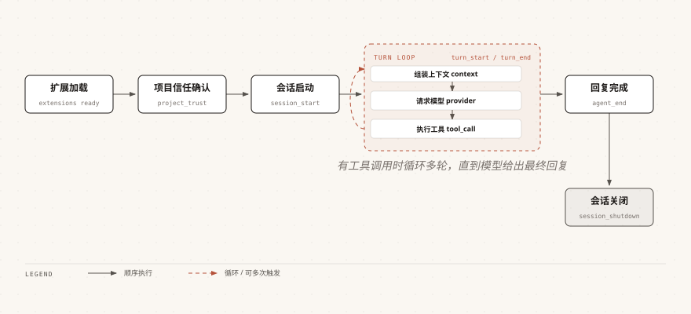

Pi Agent イベントシステム
イベントシステムは拡張機能の中核メカニズムです。
ライフサイクルイベントを監視することで、AIが動作する各段階にカスタムロジックを挿入できます。
ライフサイクル全体図
以下は、Pi Agent が起動から終了までの間にトリガーされるすべてのイベントです：

各ターン内では、context、provider、tool の3種類のイベントが順番にトリガーされ、ツール呼び出しがある場合は複数ラウンドループします。
破線部分は、その段階が複数のイベントによって複数回トリガーされ得ることを示します。
input、before_agent_start、resources_discover、agent_settled など、その他のイベントのトリガータイミングは、下の全イベント早見表を参照してください。
コアイベントの詳細
このセクションでは、使用頻度が最も高い5つのイベントを取り上げ、それらのトリガータイミングと戻り値の規約を説明します。
input — 入力インターセプト
ユーザー入力が処理される前にトリガーされ、入力を変換、インターセプト、または直接処理できます：
例
// 以下の断片は拡張ファクトリ関数の本体内にあります
pi.on("input", async (event, ctx) => {
// event.text - 元の入力テキスト
// event.images - 付随する画像
// event.source - "interactive" | "rpc" | "extension"
// 入力を変換：入力の前に指示を追加
if (event.text.startsWith("?quick ")) {
return {
action: "transform",
text:`簡潔な返信：${event.text.slice(7)}`
};
}
// 直接処理：LLMを経由せずに直接応答
if (event.text === "ping") {
ctx.ui.notify("pong", "info");
return { action: "handled" };
}
// 拡張機能によって注入されたメッセージをスキップ
if (event.source === "extension") {
return { action: "continue" };
}
return { action: "continue" }; // デフォルト：通常の処理
});
| action の値 | 効果 |
|---|---|
| "continue" | 入力を変更せず、通常の処理フローを続行 |
| "transform" | 入力を変更して処理を続行。複数のハンドラの変換はチェーン状に累積される |
| "handled" | 完全に引き継ぎ、LLM呼び出しをスキップ（この値を最初に返したハンドラが有効） |
2つの典型的な書き方の実際の効果は次のとおりです。
入力?quick hello worldの場合、実際にLLMに送信されるテキストは書き換えられています：
简短回复：hello world
入力pingの場合、LLMは呼び出されず、ターミナルに通知が1つ表示されるだけです：
pong
inputイベントはSkillとテンプレートの展開の前にトリガーされるため、表示されるのは元の入力です。
/skill:foo と /template はこの時点ではまだ展開されていません。
tool_call — ツール呼び出しのインターセプト
ツール実行の前にトリガーされ、パラメータを変更したり実行をブロックしたりできます：
例
// import はモジュールの最上位に記述し、以下の pi.on の断片は拡張ファクトリ関数の本体内にあります
// isToolCallEventType は型ガードであり、公式パッケージからインポートする必要があります
import { isToolCallEventType } from "@earendil-works/pi-coding-agent";
pi.on("tool_call", async (event, ctx) => {
// 危険なbashコマンドをインターセプト
if (isToolCallEventType("bash", event)) {
// event.input は { command: string; timeout?: number }
const dangerous = ["rm -rf /", "mkfs.", "dd if=", "> /dev/sda"];
// まず危険かどうかを判断し、それから通過させるかどうかを決定
if (dangerous.some(cmd =>
event.input.command.includes(cmd))) {
return { block: true, reason: "危険なコマンドはブロックされました" };
}
// 判断を通過した後にのみ環境変数のロードを追加
event.input.command = `source ~/.profile\n${event.input.command}`;
}
// すべてのファイル読み取り操作を記録
if (isToolCallEventType("read", event)) {
// event.input は { path: string; offset?: number; limit?: number }
ctx.ui.notify(`ファイルを読み取り: ${event.input.path}`, "info");
}
});
AIが以下を実行しようとした場合rm -rf /、ツールは実行されず、ターミナルにブロック理由が表示されます：
危険なコマンドはブロックされました
event.inputは変更可能です——これを変更するとツールの実行に直接影響します。
tool_result — ツール結果の変更
ツール実行の完了後にトリガーされ、LLMに返す結果を変更できます：
例
// 以下の断片は拡張ファクトリ関数の本体内にあります
pi.on("tool_result", async (event, ctx) => {
// event.toolName - ツール名
// event.content - LLMに返す内容
// event.details - 詳細データ
// event.isError - エラーかどうか
// 例：read の結果に行番号を追加
if (event.toolName === "read" && !event.isError) {
const lines = event.content
.filter(c => c.type === "text")
.map(c => c.text)
.join("\n")
.split("\n")
.map((line, i) => `${i + 1}: ${line}`)
.join("\n");
return {
content: [{ type: "text", text: lines }],
};
}
});
元々2行のファイル内容は、LLMに渡されると行番号付きの形式になります：
1: import { readFile } from "node:fs/promises";
2: export async function load() {
context — LLMコンテキストの変更
毎回のLLM呼び出しの前にトリガーされ、メッセージをフィルタリングまたは変更できます：
例
// 以下の断片は拡張ファクトリ関数の本体内にあります
pi.on("context", async (event, ctx) => {
// event.messages - 現在のコンテキストメッセージのディープコピーであり、安全に変更可能
// 特定のタイプのメッセージをフィルタリング
const filtered = event.messages.filter(m => {
// カスタムタイプが "debug" のメッセージを削除
if (m.type === "custom" && m.customType === "debug") {
return false;
}
return true;
});
return { messages: filtered };
});
before_agent_start — メッセージの注入
AIがユーザー入力の処理を開始する前にトリガーされ、追加のメッセージを注入したりシステムプロンプトを変更したりできます：
例
// 以下の断片は拡張ファクトリ関数の本体内にあります
pi.on("before_agent_start", async (event, ctx) => {
// event.prompt - ユーザーのプロンプトテキスト
// event.systemPrompt - 現在設定されているシステムプロンプト
return {
// 永続化メッセージを1件注入（セッションに保存され、LLMに送信）
message: {
customType: "my-context",
content:`現在の時刻は ${new Date().toISOString()}`,
display: true,
},
// システムプロンプトに追加
systemPrompt: event.systemPrompt
+ "\n\nすべての返信で中国語を使用してください。",
};
});
全イベント早見表
前のセクションのASCII図には他にも多くのイベントが登場しました。ここではトリガー順にまとめて記載しているので、参照しやすくなっています。
| イベント | トリガータイミング | 変更可能か | ブロック可能か |
|---|---|---|---|
| project_trust | プロジェクトリソースをロードする前に、現在のプロジェクトを信頼するかどうかを確認 | 否 | はい（拒否した場合はプロジェクト拡張機能をロードしない） |
| session_start | セッションの起動または復元時 | 否 | 否 |
| resources_discover | session_start の後にトリガー（startup/reload 時） | はい（Skill、プロンプトテンプレート、テーマパスの追加のみ可能。拡張機能の追加・削除は不可） | 否 |
| input | ユーザー入力が処理される前 | はい（入力を変換可能） | はい（handled で引き継ぎ） |
| before_agent_start | AIがユーザー入力の処理を開始する前 | はい（メッセージの注入、システムプロンプトの変更が可能） | 否 |
| agent_start | agentループ開始時 | 否 | 否 |
| message_start / message_update | メッセージ生成中（message_update はアシスタントのストリーミング増分） | 否 | 否 |
| message_end | ユーザー、アシスタント、toolResult メッセージが確定したとき | はい（{ message } を返して最終メッセージを置き換え可能。role は一致している必要があります） | 否 |
| turn_start | 各ターンの開始時 | 否 | 否 |
| context | 毎回のLLM呼び出しの前 | はい（メッセージをフィルタリング可能） | 否 |
| before_provider_headers | HTTPリクエストヘッダーを送信する前 | はい（リクエストヘッダーを追加・変更可能） | 否 |
| before_provider_request | リクエストボディをモデルに送信する前 | はい（undefined 以外の値を返すとリクエスト全体のpayloadを置き換える。リクエストを中止するわけではない） | 否 |
| after_provider_response | HTTPレスポンスを受信した後、ストリーミングbodyがまだ消費されていない時点 | いいえ（status/headers を読み取って観測することのみ可能） | 否 |
| tool_execution_start | ツールの実行開始時 | 否 | 否 |
| tool_call | ツール実行前 | はい（event.input は変更可能） | はい（block: true） |
| tool_execution_update | ツール実行中に進捗が発生したとき | 否 | 否 |
| tool_result | ツール実行完了後 | はい（戻り内容を変更可能） | 否 |
| tool_execution_end | ツール実行終了時 | 否 | 否 |
| turn_end | 各ターン終了時 | 否 | 否 |
| agent_end | エージェントループ終了時 | 否 | 否 |
| agent_settled | 1ラウンドの対話が完全に落ち着いた後 | 否 | 否 |
| session_before_switch | /new または /resume の実行前 | 否 | はい（{ cancel: true } を返します） |
| session_before_fork | /fork または /clone の実行前 | 否 | はい（{ cancel: true } を返します） |
| session_before_compact | 圧縮実行前（手動 /compact、しきい値、コンテキストオーバーフロー） | はい（圧縮サマリーをカスタマイズ可能） | はい（{ cancel: true } を返します） |
| session_shutdown | セッション破棄前に発火します。終了、/new、/resume、/fork、/reload でも発火します（reason は quit/reload/new/resume/fork） | 否 | 否 |
イベント処理のポイント
イベントハンドラーを書く際、以下の点がコードの堅牢性を左右します。
| メソッド | 機能 |
|---|---|
| 複数の拡張機能が同じイベントを監視する場合 | 拡張機能の読み込み順に順次実行され、前の戻り値が後続のハンドラーに影響します |
| 戻り値{ block: true, reason: "..." } | その操作をブロックし、reason はユーザーと AI に表示されます |
| 戻り値{ cancel: true } | セッション切り替えなどの操作をキャンセルします |
| 使用ctx.signal | 非同期操作でキャンセル信号に応答し、ユーザーが Escape キーを押すと中止します |
| 使用ctx.ui一連のメソッド | ユーザーとの対話（notify、confirm、select など） |
| 用 ctx.hasUIダイアログ呼び出しのガード | Print/JSON/RPC モードではダイアログ系メソッドは利用不可または空操作のため、先に判定してから呼び出します |
| 用 ctx.mode === "tui"TUI 専用 API のガード | custom()、コンポーネントファクトリ、端末入力などは対話モードでのみ有効です |
他の拡張機能拡張機能のファクトリー関数内でバックグラウンドリソース（プロセス、ソケット、タイマーなど）を起動しないでください。
リソースの起動をsession_startイベント内に延期し、session_shutdownでクリーンアップします。
クリックしてノートを共有
<p style="font-size:14px;">ノートは本記事の内容を拡張したものである必要があります！</p><br> <p style="font-size:12px;"><a href="../tougao.html" target="_blank">記事の投稿はこちらから</a></p> <p style="font-size:14px;"><a href="../w3cnote/runoob-user-test-intro.html" target="_blank">登録招待コードの取得方法</a></p> <h3 class="text-muted"><i class="fa fa-info-circle" aria-hidden="true"></i> ノートを共有する前に<a href=";.html" class="runoob-pop">ログイン</a>が必要です！</h3> <p><a href="../w3cnote/runoob-user-test-intro.html" target="_blank">登録招待コードの取得方法</a></p>